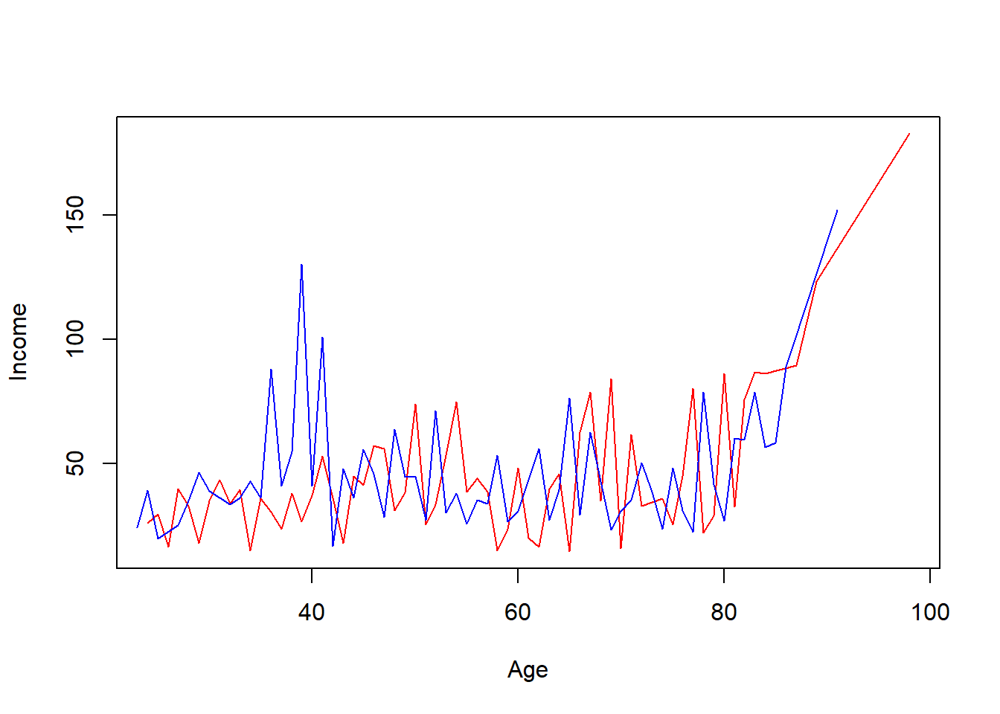

Розділ 5 5. Прийоми маніпулювання даними (з використанням можливостей бібліотеки dplyr)
Матеріали курсу у процесі навповнення. Слідкуйте за оновленнями
Матеріали лекції у процесі перекладу, базовий контент розміщено у репозоторії https://github.com/kleban/r:
- 032_ETL. Manipulate data with dplyr.ipynb
- 033_ETL. Train Test Validation.ipynb
- 034_ETL. Feature engineering in R.ipynb
5.1 1.What’s dplyr
The dplyr package is one of the most powerful and popular package in R for data manipulation.
Working with data:
- Figure out what you want to do.
- Describe those tasks in the form of a computer program.
- Execute the program.
The dplyr package makes these steps fast and easy:
- By constraining your options, it helps you think about your data manipulation challenges.
- It provides simple verbs, functions that correspond to the most common data manipulation tasks, to help you translate your thoughts into code.
- It uses efficient backends, so you spend less time waiting for the computer.
Before use you should install package:
#install.packages("dplyr")Next step is loading package:
library(dplyr)##
## Attaching package: 'dplyr'## The following objects are masked from 'package:stats':
##
## filter, lag## The following objects are masked from 'package:base':
##
## intersect, setdiff, setequal, unionAlternative way is to load tidyverse package with other attached:
#install.packages("tidyverse")
library(tidyverse)## -- Attaching packages --------------------------------------- tidyverse 1.3.1 --## v ggplot2 3.3.5 v purrr 0.3.4
## v tibble 3.1.2 v stringr 1.4.0
## v tidyr 1.1.3 v forcats 0.5.1
## v readr 1.4.0## -- Conflicts ------------------------------------------ tidyverse_conflicts() --
## x dplyr::filter() masks stats::filter()
## x dplyr::lag() masks stats::lag()# to tidyverse attached packages
# tidyverse_packages(include_self = TRUE)5.2 2. Exploring data with dplyr
5.2.1 2.1. Funtions and dataset explore
For the next sample we are going to use gapminder dataset.
The gapminder data frame include six variables: country, continent, year, lifeExp - life expectancy at birth, pop - total population, gdpPercap - per-capita GDP.
Per-capita GDP (Gross domestic product) is given in units of international dollars, a hypothetical unit of currency that has the same purchasing power parity that the U.S. dollar had in the United States at a given point in time – 2005, in this case.
The gapminder data frame is a special kind of data frame: a tibble.
#install.packages("gapminder")
library(gapminder) # load package and dataset
class(gapminder)## [1] "tbl_df" "tbl" "data.frame"Let’s preview it with functions str(), glimpse(), head(), tail(), summary().
str(gapminder)## tibble [1,704 x 6] (S3: tbl_df/tbl/data.frame)
## $ country : Factor w/ 142 levels "Afghanistan",..: 1 1 1 1 1 1 1 1 1 1 ...
## $ continent: Factor w/ 5 levels "Africa","Americas",..: 3 3 3 3 3 3 3 3 3 3 ...
## $ year : int [1:1704] 1952 1957 1962 1967 1972 1977 1982 1987 1992 1997 ...
## $ lifeExp : num [1:1704] 28.8 30.3 32 34 36.1 ...
## $ pop : int [1:1704] 8425333 9240934 10267083 11537966 13079460 14880372 12881816 13867957 16317921 22227415 ...
## $ gdpPercap: num [1:1704] 779 821 853 836 740 ...glimpse(gapminder)## Rows: 1,704
## Columns: 6
## $ country <fct> "Afghanistan", "Afghanistan", "Afghanistan", "Afghanistan", ~
## $ continent <fct> Asia, Asia, Asia, Asia, Asia, Asia, Asia, Asia, Asia, Asia, ~
## $ year <int> 1952, 1957, 1962, 1967, 1972, 1977, 1982, 1987, 1992, 1997, ~
## $ lifeExp <dbl> 28.801, 30.332, 31.997, 34.020, 36.088, 38.438, 39.854, 40.8~
## $ pop <int> 8425333, 9240934, 10267083, 11537966, 13079460, 14880372, 12~
## $ gdpPercap <dbl> 779.4453, 820.8530, 853.1007, 836.1971, 739.9811, 786.1134, ~head(gapminder) #shows first n-rows, 6 by default## # A tibble: 6 x 6
## country continent year lifeExp pop gdpPercap
## <fct> <fct> <int> <dbl> <int> <dbl>
## 1 Afghanistan Asia 1952 28.8 8425333 779.
## 2 Afghanistan Asia 1957 30.3 9240934 821.
## 3 Afghanistan Asia 1962 32.0 10267083 853.
## 4 Afghanistan Asia 1967 34.0 11537966 836.
## 5 Afghanistan Asia 1972 36.1 13079460 740.
## 6 Afghanistan Asia 1977 38.4 14880372 786.tail(gapminder) #shows last n-rows, 6 by default## # A tibble: 6 x 6
## country continent year lifeExp pop gdpPercap
## <fct> <fct> <int> <dbl> <int> <dbl>
## 1 Zimbabwe Africa 1982 60.4 7636524 789.
## 2 Zimbabwe Africa 1987 62.4 9216418 706.
## 3 Zimbabwe Africa 1992 60.4 10704340 693.
## 4 Zimbabwe Africa 1997 46.8 11404948 792.
## 5 Zimbabwe Africa 2002 40.0 11926563 672.
## 6 Zimbabwe Africa 2007 43.5 12311143 470.summary(gapminder)## country continent year lifeExp
## Afghanistan: 12 Africa :624 Min. :1952 Min. :23.60
## Albania : 12 Americas:300 1st Qu.:1966 1st Qu.:48.20
## Algeria : 12 Asia :396 Median :1980 Median :60.71
## Angola : 12 Europe :360 Mean :1980 Mean :59.47
## Argentina : 12 Oceania : 24 3rd Qu.:1993 3rd Qu.:70.85
## Australia : 12 Max. :2007 Max. :82.60
## (Other) :1632
## pop gdpPercap
## Min. :6.001e+04 Min. : 241.2
## 1st Qu.:2.794e+06 1st Qu.: 1202.1
## Median :7.024e+06 Median : 3531.8
## Mean :2.960e+07 Mean : 7215.3
## 3rd Qu.:1.959e+07 3rd Qu.: 9325.5
## Max. :1.319e+09 Max. :113523.1
## 5.2.2 2.2. filter() function
austria <- filter(gapminder, country == "Austria")
austria## # A tibble: 12 x 6
## country continent year lifeExp pop gdpPercap
## <fct> <fct> <int> <dbl> <int> <dbl>
## 1 Austria Europe 1952 66.8 6927772 6137.
## 2 Austria Europe 1957 67.5 6965860 8843.
## 3 Austria Europe 1962 69.5 7129864 10751.
## 4 Austria Europe 1967 70.1 7376998 12835.
## 5 Austria Europe 1972 70.6 7544201 16662.
## 6 Austria Europe 1977 72.2 7568430 19749.
## 7 Austria Europe 1982 73.2 7574613 21597.
## 8 Austria Europe 1987 74.9 7578903 23688.
## 9 Austria Europe 1992 76.0 7914969 27042.
## 10 Austria Europe 1997 77.5 8069876 29096.
## 11 Austria Europe 2002 79.0 8148312 32418.
## 12 Austria Europe 2007 79.8 8199783 36126.filter() takes logical expressions and returns the rows for which all are TRUE.
# task: select rows with lifeExp less than 31
filter(gapminder, lifeExp < 31)## # A tibble: 6 x 6
## country continent year lifeExp pop gdpPercap
## <fct> <fct> <int> <dbl> <int> <dbl>
## 1 Afghanistan Asia 1952 28.8 8425333 779.
## 2 Afghanistan Asia 1957 30.3 9240934 821.
## 3 Angola Africa 1952 30.0 4232095 3521.
## 4 Gambia Africa 1952 30 284320 485.
## 5 Rwanda Africa 1992 23.6 7290203 737.
## 6 Sierra Leone Africa 1952 30.3 2143249 880.# task: select Austria only and year after 1980
filter(gapminder, country == "Austria", year > 1980)## # A tibble: 6 x 6
## country continent year lifeExp pop gdpPercap
## <fct> <fct> <int> <dbl> <int> <dbl>
## 1 Austria Europe 1982 73.2 7574613 21597.
## 2 Austria Europe 1987 74.9 7578903 23688.
## 3 Austria Europe 1992 76.0 7914969 27042.
## 4 Austria Europe 1997 77.5 8069876 29096.
## 5 Austria Europe 2002 79.0 8148312 32418.
## 6 Austria Europe 2007 79.8 8199783 36126.# task: select Austria and Belgium
filter(gapminder, country %in% c("Austria", "Belgium"))## # A tibble: 24 x 6
## country continent year lifeExp pop gdpPercap
## <fct> <fct> <int> <dbl> <int> <dbl>
## 1 Austria Europe 1952 66.8 6927772 6137.
## 2 Austria Europe 1957 67.5 6965860 8843.
## 3 Austria Europe 1962 69.5 7129864 10751.
## 4 Austria Europe 1967 70.1 7376998 12835.
## 5 Austria Europe 1972 70.6 7544201 16662.
## 6 Austria Europe 1977 72.2 7568430 19749.
## 7 Austria Europe 1982 73.2 7574613 21597.
## 8 Austria Europe 1987 74.9 7578903 23688.
## 9 Austria Europe 1992 76.0 7914969 27042.
## 10 Austria Europe 1997 77.5 8069876 29096.
## # ... with 14 more rows5.3 2.3. Pipe (%>%) operator
%>% is pipe operator. The pipe operator takes the thing on the left-hand-side and pipes it into the function call on the right-hand-side – literally, drops it in as the first argument.
In R version before 4.1.0 pipe %>% operator is not a language build-in and you should install magrittr package:
#install.packages("magrittr") # for pipe %>% operator
library(magrittr)##
## Attaching package: 'magrittr'## The following object is masked from 'package:purrr':
##
## set_names## The following object is masked from 'package:tidyr':
##
## extracthead() function without pipe and top 4 items:
head(gapminder, n = 4)## # A tibble: 4 x 6
## country continent year lifeExp pop gdpPercap
## <fct> <fct> <int> <dbl> <int> <dbl>
## 1 Afghanistan Asia 1952 28.8 8425333 779.
## 2 Afghanistan Asia 1957 30.3 9240934 821.
## 3 Afghanistan Asia 1962 32.0 10267083 853.
## 4 Afghanistan Asia 1967 34.0 11537966 836.head() function with pipe and top 4 items:
gapminder %>% head(4)## # A tibble: 4 x 6
## country continent year lifeExp pop gdpPercap
## <fct> <fct> <int> <dbl> <int> <dbl>
## 1 Afghanistan Asia 1952 28.8 8425333 779.
## 2 Afghanistan Asia 1957 30.3 9240934 821.
## 3 Afghanistan Asia 1962 32.0 10267083 853.
## 4 Afghanistan Asia 1967 34.0 11537966 836.Output is the same. So, let’s rewrire filtering for Austria with pipe:
austria <- gapminder %>% filter(country == "Austria")
austria## # A tibble: 12 x 6
## country continent year lifeExp pop gdpPercap
## <fct> <fct> <int> <dbl> <int> <dbl>
## 1 Austria Europe 1952 66.8 6927772 6137.
## 2 Austria Europe 1957 67.5 6965860 8843.
## 3 Austria Europe 1962 69.5 7129864 10751.
## 4 Austria Europe 1967 70.1 7376998 12835.
## 5 Austria Europe 1972 70.6 7544201 16662.
## 6 Austria Europe 1977 72.2 7568430 19749.
## 7 Austria Europe 1982 73.2 7574613 21597.
## 8 Austria Europe 1987 74.9 7578903 23688.
## 9 Austria Europe 1992 76.0 7914969 27042.
## 10 Austria Europe 1997 77.5 8069876 29096.
## 11 Austria Europe 2002 79.0 8148312 32418.
## 12 Austria Europe 2007 79.8 8199783 36126.# add more conditions in filter
austria <- gapminder %>% filter(country == "Austria", year > 2000)
austria## # A tibble: 2 x 6
## country continent year lifeExp pop gdpPercap
## <fct> <fct> <int> <dbl> <int> <dbl>
## 1 Austria Europe 2002 79.0 8148312 32418.
## 2 Austria Europe 2007 79.8 8199783 36126.5.3.1 2.4. select function
Use select() to subset the data on variables/columns by names or index. You also can define order of columns with select().
gapminder %>%
select(year, country, pop) %>%
slice(1: 10)## # A tibble: 10 x 3
## year country pop
## <int> <fct> <int>
## 1 1952 Afghanistan 8425333
## 2 1957 Afghanistan 9240934
## 3 1962 Afghanistan 10267083
## 4 1967 Afghanistan 11537966
## 5 1972 Afghanistan 13079460
## 6 1977 Afghanistan 14880372
## 7 1982 Afghanistan 12881816
## 8 1987 Afghanistan 13867957
## 9 1992 Afghanistan 16317921
## 10 1997 Afghanistan 22227415Finally, lest extend our filtering:
# compare dplyr syntax with base R call
gapminder[gapminder$country == "Austria", c("year", "pop", "lifeExp")]## # A tibble: 12 x 3
## year pop lifeExp
## <int> <int> <dbl>
## 1 1952 6927772 66.8
## 2 1957 6965860 67.5
## 3 1962 7129864 69.5
## 4 1967 7376998 70.1
## 5 1972 7544201 70.6
## 6 1977 7568430 72.2
## 7 1982 7574613 73.2
## 8 1987 7578903 74.9
## 9 1992 7914969 76.0
## 10 1997 8069876 77.5
## 11 2002 8148312 79.0
## 12 2007 8199783 79.8gapminder %>%
filter(country == "Austria") %>%
select(year, pop, lifeExp)## # A tibble: 12 x 3
## year pop lifeExp
## <int> <int> <dbl>
## 1 1952 6927772 66.8
## 2 1957 6965860 67.5
## 3 1962 7129864 69.5
## 4 1967 7376998 70.1
## 5 1972 7544201 70.6
## 6 1977 7568430 72.2
## 7 1982 7574613 73.2
## 8 1987 7578903 74.9
## 9 1992 7914969 76.0
## 10 1997 8069876 77.5
## 11 2002 8148312 79.0
## 12 2007 8199783 79.8You can remove some columns using minus(operator) and add few filter conditions:
austria <- gapminder %>%
filter(country == "Austria", year > 2000) %>%
select(-continent, -gdpPercap) %>%
head()
austria## # A tibble: 2 x 4
## country year lifeExp pop
## <fct> <int> <dbl> <int>
## 1 Austria 2002 79.0 8148312
## 2 Austria 2007 79.8 8199783You can insert different conditions about columns you need to select.
gapminder %>%
select(!where(is.numeric)) %>% # its 1704 records, because of repeating some records
slice(1:5)## # A tibble: 5 x 2
## country continent
## <fct> <fct>
## 1 Afghanistan Asia
## 2 Afghanistan Asia
## 3 Afghanistan Asia
## 4 Afghanistan Asia
## 5 Afghanistan AsiaLet’s output all unique pairs continent -> country with distinct() function:
gapminder %>%
select(country) %>%
distinct() # its 142 records now## # A tibble: 142 x 1
## country
## <fct>
## 1 Afghanistan
## 2 Albania
## 3 Algeria
## 4 Angola
## 5 Argentina
## 6 Australia
## 7 Austria
## 8 Bahrain
## 9 Bangladesh
## 10 Belgium
## # ... with 132 more rows| ### 2.5. Random sampling |
| The sample_n() function selects random rows from a data frame |
r gapminder %>% sample_n(5) |
## # A tibble: 5 x 6 ## country continent year lifeExp pop gdpPercap ## <fct> <fct> <int> <dbl> <int> <dbl> ## 1 Senegal Africa 1977 48.9 5260855 1562. ## 2 Paraguay Americas 2007 71.8 6667147 4173. ## 3 Bulgaria Europe 1977 70.8 8797022 7612. ## 4 Cambodia Asia 1952 39.4 4693836 368. ## 5 Slovak Republic Europe 1957 67.4 3844277 6093. |
| If you want make pseudo-random generation reprodusable use set.seed(). Seed is start point of random generation. Different seeds give different output. |
r set.seed(2021) # example, seed = 2021 |
| The sample_frac() function selects random fraction rows from a data frame. Let’s select \(1\%\) of data |
r set.seed(2021) # output not changing, uncomment it gapminder %>% sample_frac(0.1) |
## # A tibble: 170 x 6 ## country continent year lifeExp pop gdpPercap ## <fct> <fct> <int> <dbl> <int> <dbl> ## 1 Libya Africa 1962 47.8 1441863 6757. ## 2 Botswana Africa 1997 52.6 1536536 8647. ## 3 Swaziland Africa 1957 43.4 326741 1245. ## 4 Dominican Republic Americas 1997 70.0 7992357 3614. ## 5 Iraq Asia 2002 57.0 24001816 4391. ## 6 Libya Africa 1987 66.2 3799845 11771. ## 7 Montenegro Europe 1967 67.2 501035 5908. ## 8 New Zealand Oceania 1957 70.3 2229407 12247. ## 9 Bulgaria Europe 2007 73.0 7322858 10681. ## 10 Malawi Africa 1997 47.5 10419991 692. ## # ... with 160 more rows |
5.3.2 2.6. Subset rows using their positions with slice()
Description
- slice() lets you index rows by their (integer) locations. It allows you to select, remove, and duplicate rows. It is accompanied by a number of helpers for common use cases:
- slice_head() and slice_tail() select the first or last rows.
- slice_sample() randomly selects rows.
- slice_min() and slice_max() select rows with highest or lowest values of a variable.
If .data is a grouped_df, the operation will be performed on each group, so that (e.g.) slice_head(df, n = 5) will select the first five rows in each group.
Samples
gapminder %>% slice(1) # top 1 row## # A tibble: 1 x 6
## country continent year lifeExp pop gdpPercap
## <fct> <fct> <int> <dbl> <int> <dbl>
## 1 Afghanistan Asia 1952 28.8 8425333 779.gapminder %>% slice(1:6) # top n = 6## # A tibble: 6 x 6
## country continent year lifeExp pop gdpPercap
## <fct> <fct> <int> <dbl> <int> <dbl>
## 1 Afghanistan Asia 1952 28.8 8425333 779.
## 2 Afghanistan Asia 1957 30.3 9240934 821.
## 3 Afghanistan Asia 1962 32.0 10267083 853.
## 4 Afghanistan Asia 1967 34.0 11537966 836.
## 5 Afghanistan Asia 1972 36.1 13079460 740.
## 6 Afghanistan Asia 1977 38.4 14880372 786.gapminder %>% slice_head(n = 6) # works like head()## # A tibble: 6 x 6
## country continent year lifeExp pop gdpPercap
## <fct> <fct> <int> <dbl> <int> <dbl>
## 1 Afghanistan Asia 1952 28.8 8425333 779.
## 2 Afghanistan Asia 1957 30.3 9240934 821.
## 3 Afghanistan Asia 1962 32.0 10267083 853.
## 4 Afghanistan Asia 1967 34.0 11537966 836.
## 5 Afghanistan Asia 1972 36.1 13079460 740.
## 6 Afghanistan Asia 1977 38.4 14880372 786.gapminder %>% slice_tail(n = 5) # works like tail()## # A tibble: 5 x 6
## country continent year lifeExp pop gdpPercap
## <fct> <fct> <int> <dbl> <int> <dbl>
## 1 Zimbabwe Africa 1987 62.4 9216418 706.
## 2 Zimbabwe Africa 1992 60.4 10704340 693.
## 3 Zimbabwe Africa 1997 46.8 11404948 792.
## 4 Zimbabwe Africa 2002 40.0 11926563 672.
## 5 Zimbabwe Africa 2007 43.5 12311143 470.You can drop some recods with negative indexes:
gapminder %>% slice(-c(1:3,5)) %>% # remove Afganistan years 1952, 1957, 1962 and 1972
head(6)## # A tibble: 6 x 6
## country continent year lifeExp pop gdpPercap
## <fct> <fct> <int> <dbl> <int> <dbl>
## 1 Afghanistan Asia 1967 34.0 11537966 836.
## 2 Afghanistan Asia 1977 38.4 14880372 786.
## 3 Afghanistan Asia 1982 39.9 12881816 978.
## 4 Afghanistan Asia 1987 40.8 13867957 852.
## 5 Afghanistan Asia 1992 41.7 16317921 649.
## 6 Afghanistan Asia 1997 41.8 22227415 635.# Random rows selection with slice_sample()
gapminder %>% slice_sample(n = 5) #use set.seed() to fix random## # A tibble: 5 x 6
## country continent year lifeExp pop gdpPercap
## <fct> <fct> <int> <dbl> <int> <dbl>
## 1 Cambodia Asia 2002 56.8 12926707 896.
## 2 Poland Europe 2002 74.7 38625976 12002.
## 3 Bulgaria Europe 1972 70.9 8576200 6597.
## 4 Congo, Dem. Rep. Africa 1952 39.1 14100005 781.
## 5 Chad Africa 2002 50.5 8835739 1156.# Rows with minimum and maximum values of a variable
# Lets find top 5 records with minimum and maximum lifeExp in all dataset
gapminder %>% slice_min(lifeExp, n = 5)## # A tibble: 5 x 6
## country continent year lifeExp pop gdpPercap
## <fct> <fct> <int> <dbl> <int> <dbl>
## 1 Rwanda Africa 1992 23.6 7290203 737.
## 2 Afghanistan Asia 1952 28.8 8425333 779.
## 3 Gambia Africa 1952 30 284320 485.
## 4 Angola Africa 1952 30.0 4232095 3521.
## 5 Sierra Leone Africa 1952 30.3 2143249 880.gapminder %>% slice_max(lifeExp, n = 5)## # A tibble: 5 x 6
## country continent year lifeExp pop gdpPercap
## <fct> <fct> <int> <dbl> <int> <dbl>
## 1 Japan Asia 2007 82.6 127467972 31656.
## 2 Hong Kong, China Asia 2007 82.2 6980412 39725.
## 3 Japan Asia 2002 82 127065841 28605.
## 4 Iceland Europe 2007 81.8 301931 36181.
## 5 Switzerland Europe 2007 81.7 7554661 37506.5.3.3 2.7. Sorting with arrange()
arrange(.data, …) function order rows by values of a column or columns (low to high)You can use with desc() to order from high to low.
For example, we need to select top 10 countries in 2002 by lifeExp variable.
data2002 <- gapminder %>%
filter(year == 2002) %>%
top_n(10, lifeExp) # select top 10 by lifeExp value
data2002## # A tibble: 10 x 6
## country continent year lifeExp pop gdpPercap
## <fct> <fct> <int> <dbl> <int> <dbl>
## 1 Australia Oceania 2002 80.4 19546792 30688.
## 2 Canada Americas 2002 79.8 31902268 33329.
## 3 Hong Kong, China Asia 2002 81.5 6762476 30209.
## 4 Iceland Europe 2002 80.5 288030 31163.
## 5 Israel Asia 2002 79.7 6029529 21906.
## 6 Italy Europe 2002 80.2 57926999 27968.
## 7 Japan Asia 2002 82 127065841 28605.
## 8 Spain Europe 2002 79.8 40152517 24835.
## 9 Sweden Europe 2002 80.0 8954175 29342.
## 10 Switzerland Europe 2002 80.6 7361757 34481.# sort by pop
t <- gapminder %>% arrange(continent)
t <- gapminder %>% arrange(continent, country)
t <- gapminder %>% arrange(continent, desc( country))5.3.4 2.7. Create new variables with mutate()
mutate(.data, …) compute new column(s). Lets compute new column for data2002 \(gdpTotal = gdpPercap * pop / 1000000\).
gapminder %>%
mutate(gdpTotal = gdpPercap * pop) %>%
head(10)## # A tibble: 10 x 7
## country continent year lifeExp pop gdpPercap gdpTotal
## <fct> <fct> <int> <dbl> <int> <dbl> <dbl>
## 1 Afghanistan Asia 1952 28.8 8425333 779. 6567086330.
## 2 Afghanistan Asia 1957 30.3 9240934 821. 7585448670.
## 3 Afghanistan Asia 1962 32.0 10267083 853. 8758855797.
## 4 Afghanistan Asia 1967 34.0 11537966 836. 9648014150.
## 5 Afghanistan Asia 1972 36.1 13079460 740. 9678553274.
## 6 Afghanistan Asia 1977 38.4 14880372 786. 11697659231.
## 7 Afghanistan Asia 1982 39.9 12881816 978. 12598563401.
## 8 Afghanistan Asia 1987 40.8 13867957 852. 11820990309.
## 9 Afghanistan Asia 1992 41.7 16317921 649. 10595901589.
## 10 Afghanistan Asia 1997 41.8 22227415 635. 14121995875.transmute(.data, …) compute new column(s), drop others.
gapminder %>% transmute(gdpTotal = gdpPercap * pop) %>%
head(10)## # A tibble: 10 x 1
## gdpTotal
## <dbl>
## 1 6567086330.
## 2 7585448670.
## 3 8758855797.
## 4 9648014150.
## 5 9678553274.
## 6 11697659231.
## 7 12598563401.
## 8 11820990309.
## 9 10595901589.
## 10 14121995875.You can mutate many columns at once:
gapminder %>%
mutate(gdpTotal = gdpPercap * pop,
countryUpper = toupper(country), # uppercase country
lifeExpRounded = round(lifeExp)) %>%
head(10)## # A tibble: 10 x 9
## country continent year lifeExp pop gdpPercap gdpTotal countryUpper
## <fct> <fct> <int> <dbl> <int> <dbl> <dbl> <chr>
## 1 Afghanist~ Asia 1952 28.8 8425333 779. 6.57e 9 AFGHANISTAN
## 2 Afghanist~ Asia 1957 30.3 9240934 821. 7.59e 9 AFGHANISTAN
## 3 Afghanist~ Asia 1962 32.0 10267083 853. 8.76e 9 AFGHANISTAN
## 4 Afghanist~ Asia 1967 34.0 11537966 836. 9.65e 9 AFGHANISTAN
## 5 Afghanist~ Asia 1972 36.1 13079460 740. 9.68e 9 AFGHANISTAN
## 6 Afghanist~ Asia 1977 38.4 14880372 786. 1.17e10 AFGHANISTAN
## 7 Afghanist~ Asia 1982 39.9 12881816 978. 1.26e10 AFGHANISTAN
## 8 Afghanist~ Asia 1987 40.8 13867957 852. 1.18e10 AFGHANISTAN
## 9 Afghanist~ Asia 1992 41.7 16317921 649. 1.06e10 AFGHANISTAN
## 10 Afghanist~ Asia 1997 41.8 22227415 635. 1.41e10 AFGHANISTAN
## # ... with 1 more variable: lifeExpRounded <dbl>You also can edit existing column (let’s change continent Europe to EU in dataframe):
data2002 %>%
mutate(
continent = as.character(continent), # convert factor -> character
continent = ifelse(continent == "Europe", "EU", continent))## # A tibble: 10 x 6
## country continent year lifeExp pop gdpPercap
## <fct> <chr> <int> <dbl> <int> <dbl>
## 1 Australia Oceania 2002 80.4 19546792 30688.
## 2 Canada Americas 2002 79.8 31902268 33329.
## 3 Hong Kong, China Asia 2002 81.5 6762476 30209.
## 4 Iceland EU 2002 80.5 288030 31163.
## 5 Israel Asia 2002 79.7 6029529 21906.
## 6 Italy EU 2002 80.2 57926999 27968.
## 7 Japan Asia 2002 82 127065841 28605.
## 8 Spain EU 2002 79.8 40152517 24835.
## 9 Sweden EU 2002 80.0 8954175 29342.
## 10 Switzerland EU 2002 80.6 7361757 34481.5.3.5 2.8. Renaming columns with rename()
rename(.data, …) rename columns. Let’s rename column pop to poulation:
gapminder %>%
rename(population = pop) %>%
head(10)## # A tibble: 10 x 6
## country continent year lifeExp population gdpPercap
## <fct> <fct> <int> <dbl> <int> <dbl>
## 1 Afghanistan Asia 1952 28.8 8425333 779.
## 2 Afghanistan Asia 1957 30.3 9240934 821.
## 3 Afghanistan Asia 1962 32.0 10267083 853.
## 4 Afghanistan Asia 1967 34.0 11537966 836.
## 5 Afghanistan Asia 1972 36.1 13079460 740.
## 6 Afghanistan Asia 1977 38.4 14880372 786.
## 7 Afghanistan Asia 1982 39.9 12881816 978.
## 8 Afghanistan Asia 1987 40.8 13867957 852.
## 9 Afghanistan Asia 1992 41.7 16317921 649.
## 10 Afghanistan Asia 1997 41.8 22227415 635.5.3.6 2.9. Calculations with group_by() + summarise()
group_by(.data, …, add = FALSE) returns copy of table grouped by defined columns.
Let’s find average by lifeExp for each continent in 2002 (ouput is continent, lifeExpAvg2002, countriesCount, year = 2002):
gapminder %>%
filter(year == 2002) %>% # year
group_by(continent, year) %>% # grouping condition
summarise(
lifeExpAvg2002 = mean(lifeExp),
countriesCount = n() # n() count of rows in group
)## `summarise()` has grouped output by 'continent'. You can override using the `.groups` argument.## # A tibble: 5 x 4
## # Groups: continent [5]
## continent year lifeExpAvg2002 countriesCount
## <fct> <int> <dbl> <int>
## 1 Africa 2002 53.3 52
## 2 Americas 2002 72.4 25
## 3 Asia 2002 69.2 33
## 4 Europe 2002 76.7 30
## 5 Oceania 2002 79.7 2Let’s find total population for each continent in 2002 (ouput is continent, totalPop, year):
gapminder %>%
filter(year == 2002) %>% # year
group_by(continent, year) %>% # grouping condition
summarise(
totalPop = sum(pop), .groups = "keep"
)## # A tibble: 5 x 3
## # Groups: continent, year [5]
## continent year totalPop
## <fct> <int> <dbl>
## 1 Africa 2002 833723916
## 2 Americas 2002 849772762
## 3 Asia 2002 3601802203
## 4 Europe 2002 578223869
## 5 Oceania 2002 23454829There are additional variations of summarise():
- summarise_all() - Apply funs to every column.
- summarise_at() - Apply funs to specific columns.
- summarise_if() - Apply funs to all cols of one type.
5.3.7 Task on Credits
library(ISLR)
group_inc <- aggregate(Income ~ Age + Gender, data = Credit, mean)
m_data <- group_inc[group_inc$Gender == " Male", ]
nrow(m_data)## [1] 63f_data <- group_inc[group_inc$Gender == "Female", ]
nrow(f_data)## [1] 62with(m_data, plot(Age, Income, type = "l", col="red"))
with(f_data, lines(Age, Income, type = "l", col ="blue"))
cd <- Credit %>%
select(Income, Age, Gender) %>%
group_by(Age, Gender) %>%
summarize(Income = mean(Income))## `summarise()` has grouped output by 'Age'. You can override using the `.groups` argument.m_data <- cd %>% filter(Gender == " Male")
nrow(m_data)## [1] 63f_data <- cd %>% filter(Gender == "Female")
nrow(f_data)## [1] 62with(m_data, plot(Age, Income, type = "l", col="red"))
with(f_data, lines(Age, Income, type = "l", col ="blue"))
5.3.8 2.10. Binding rows and columns
bind_rows(.data, …) helps to unite two dataframes with the same columns order and names.
So, if we need add one data frame to an other vertically (bind rows) we shoul use bind_rows:
grouped_data2002 <- gapminder %>%
filter(year == 2002) %>% # year
group_by(continent, year) %>% # grouping condition
summarise(
lifeExpAvg = mean(lifeExp),
countriesCount = n() # n() count of rows in group
)## `summarise()` has grouped output by 'continent'. You can override using the `.groups` argument.d2007 <- gapminder %>%
filter(year == 2007) %>% # year
group_by(continent, year) %>% # grouping condition
summarise(
lifeExpAvg = mean(lifeExp),
countriesCount = n() # n() count of rows in group
)## `summarise()` has grouped output by 'continent'. You can override using the `.groups` argument.Unite them:
grouped_data2002 %>% bind_rows(d2007) ## bind rows## # A tibble: 10 x 4
## # Groups: continent [5]
## continent year lifeExpAvg countriesCount
## <fct> <int> <dbl> <int>
## 1 Africa 2002 53.3 52
## 2 Americas 2002 72.4 25
## 3 Asia 2002 69.2 33
## 4 Europe 2002 76.7 30
## 5 Oceania 2002 79.7 2
## 6 Africa 2007 54.8 52
## 7 Americas 2007 73.6 25
## 8 Asia 2007 70.7 33
## 9 Europe 2007 77.6 30
## 10 Oceania 2007 80.7 2bind_cols(.data, …) helps to unite two dataframes with the same rows count.
grouped_data2002pop <- gapminder %>%
filter(year == 2002) %>% # year
group_by(continent) %>% # grouping condition
summarise(
totalPop = sum(pop)
) %>%
mutate(year = 2002)
grouped_data2002pop## # A tibble: 5 x 3
## continent totalPop year
## <fct> <dbl> <dbl>
## 1 Africa 833723916 2002
## 2 Americas 849772762 2002
## 3 Asia 3601802203 2002
## 4 Europe 578223869 2002
## 5 Oceania 23454829 2002Let’s combine grouped_data2002 and popgrouped_data2002pop:
grouped_data <- grouped_data2002 %>%
bind_cols(grouped_data2002pop)## New names:
## * continent -> continent...1
## * year -> year...2
## * continent -> continent...5
## * year -> year...7grouped_data## # A tibble: 5 x 7
## continent...1 year...2 lifeExpAvg countriesCount continent...5 totalPop
## <fct> <int> <dbl> <int> <fct> <dbl>
## 1 Africa 2002 53.3 52 Africa 833723916
## 2 Americas 2002 72.4 25 Americas 849772762
## 3 Asia 2002 69.2 33 Asia 3601802203
## 4 Europe 2002 76.7 30 Europe 578223869
## 5 Oceania 2002 79.7 2 Oceania 23454829
## # ... with 1 more variable: year...7 <dbl># columns with the same name were renamed!You can remove same named variables before binding:
grouped_data <- grouped_data2002 %>%
bind_cols(grouped_data2002pop %>%
select(-continent, -year))
grouped_data## # A tibble: 5 x 5
## # Groups: continent [5]
## continent year lifeExpAvg countriesCount totalPop
## <fct> <int> <dbl> <int> <dbl>
## 1 Africa 2002 53.3 52 833723916
## 2 Americas 2002 72.4 25 849772762
## 3 Asia 2002 69.2 33 3601802203
## 4 Europe 2002 76.7 30 578223869
## 5 Oceania 2002 79.7 2 23454829# better, but continents order is not the same in both frames
# your data is going to be damagedgrouped_data2002pop <- grouped_data2002pop %>% arrange(totalPop)
grouped_data <- grouped_data2002 %>%
bind_cols(grouped_data2002pop)
grouped_data
# you can see that continent fields different in the same row5.3.9 2.11. Join()ing data
To solve previous problem you can use set of join()-functions. left_join() can solve our previous example:
grouped_data2002pop <- grouped_data2002pop %>% arrange(totalPop)
grouped_data <- grouped_data2002 %>%
left_join(grouped_data2002pop, by = "continent")
grouped_data## # A tibble: 5 x 6
## # Groups: continent [5]
## continent year.x lifeExpAvg countriesCount totalPop year.y
## <fct> <int> <dbl> <int> <dbl> <dbl>
## 1 Africa 2002 53.3 52 833723916 2002
## 2 Americas 2002 72.4 25 849772762 2002
## 3 Asia 2002 69.2 33 3601802203 2002
## 4 Europe 2002 76.7 30 578223869 2002
## 5 Oceania 2002 79.7 2 23454829 2002# but we have duplicated yeargrouped_data2002pop <- grouped_data2002pop %>% arrange(totalPop)
grouped_data <- grouped_data2002 %>%
left_join(grouped_data2002pop, by = c("continent", "year"))
grouped_data## # A tibble: 5 x 5
## # Groups: continent [5]
## continent year lifeExpAvg countriesCount totalPop
## <fct> <dbl> <dbl> <int> <dbl>
## 1 Africa 2002 53.3 52 833723916
## 2 Americas 2002 72.4 25 849772762
## 3 Asia 2002 69.2 33 3601802203
## 4 Europe 2002 76.7 30 578223869
## 5 Oceania 2002 79.7 2 23454829#okLet’s make a different data sets for testing join() fucntions:
first_df <- data.frame(Letter = c("A", "B", "C", "D", "E"),
Value = c(1:5))
second_df <- data.frame(Letter = c("A", "B", "C", "D", "F"),
Value = c(12, 7, 4, 1, 5))
first_df## Letter Value
## 1 A 1
## 2 B 2
## 3 C 3
## 4 D 4
## 5 E 5second_df## Letter Value
## 1 A 12
## 2 B 7
## 3 C 4
## 4 D 1
## 5 F 5You can see that the last row Letter is different in dataframes. left_join() test is next.
first_df %>% left_join(second_df, by = "Letter")## Letter Value.x Value.y
## 1 A 1 12
## 2 B 2 7
## 3 C 3 4
## 4 D 4 1
## 5 E 5 NA# there is no F letter, becouse first_db joined only known first_df Letters.first_df %>% right_join(second_df, by = "Letter")## Letter Value.x Value.y
## 1 A 1 12
## 2 B 2 7
## 3 C 3 4
## 4 D 4 1
## 5 F NA 5# right_join! there is no E letter, becouse first_db joined only known second_df Letters.first_df %>% inner_join(second_df, by = "Letter")## Letter Value.x Value.y
## 1 A 1 12
## 2 B 2 7
## 3 C 3 4
## 4 D 4 1# inner_join! there is no E and F Letters,
# only known both first_df and second_df are left here.first_df %>% full_join(second_df, by = "Letter")## Letter Value.x Value.y
## 1 A 1 12
## 2 B 2 7
## 3 C 3 4
## 4 D 4 1
## 5 E 5 NA
## 6 F NA 5# all are here, but unknown values replaced by NA, it's ok.Short description of reviewed functions:
-
left_join()Merge two datasets. Keep all observations from the origin table -
right_join()Merge two datasets. Keep all observations from the destination table -
inner_join()Merge two datasets. Excludes all unmatched rows -
full_join()Merge two datasets. Keeps all observations
5.3.10 2.12. Data cleaning with gather()
Some times your data is not in tidy format. Peole can collect data year by year in each column. It’s problem to use such data for feature engeniering and building prediction models. Let’s generate such data sample (quaterly salary of some people).
not_good_data <- data.frame(Name = c("Nick", "Jake", "Anna", "Jane", "Dina"),
q1_2021 = c(12442, 22131, 21343, 22111, 14123),
q2_2021 = c(13442, 22871, 20343, 22222, 14456),
q3_2021 = c(15482, 22031, 22456, 22444, 14533),
q4_2021 = c(14511, 20031, 21741, 22333, 14511))
not_good_data## Name q1_2021 q2_2021 q3_2021 q4_2021
## 1 Nick 12442 13442 15482 14511
## 2 Jake 22131 22871 22031 20031
## 3 Anna 21343 20343 22456 21741
## 4 Jane 22111 22222 22444 22333
## 5 Dina 14123 14456 14533 14511better_data <- not_good_data %>%
gather(quater, salary, 2:5)
# gather(quater, salary, q1_2021:q4_2021) possible code too
better_data## Name quater salary
## 1 Nick q1_2021 12442
## 2 Jake q1_2021 22131
## 3 Anna q1_2021 21343
## 4 Jane q1_2021 22111
## 5 Dina q1_2021 14123
## 6 Nick q2_2021 13442
## 7 Jake q2_2021 22871
## 8 Anna q2_2021 20343
## 9 Jane q2_2021 22222
## 10 Dina q2_2021 14456
## 11 Nick q3_2021 15482
## 12 Jake q3_2021 22031
## 13 Anna q3_2021 22456
## 14 Jane q3_2021 22444
## 15 Dina q3_2021 14533
## 16 Nick q4_2021 14511
## 17 Jake q4_2021 20031
## 18 Anna q4_2021 21741
## 19 Jane q4_2021 22333
## 20 Dina q4_2021 14511To make our data tidier separate() can split quater column into 2 (quater and year):
best_data <- better_data %>%
separate(quater, c("quater", "year"), sep = "_") %>% # separate
mutate(year = as.integer(year), # convert year to integer
quater = substr(better_data$quater, 2,2), # trim `q` from start
quater = as.integer(quater), # convert quater to integer
) %>%
head(10)
best_data## Name quater year salary
## 1 Nick 1 2021 12442
## 2 Jake 1 2021 22131
## 3 Anna 1 2021 21343
## 4 Jane 1 2021 22111
## 5 Dina 1 2021 14123
## 6 Nick 2 2021 13442
## 7 Jake 2 2021 22871
## 8 Anna 2 2021 20343
## 9 Jane 2 2021 22222
## 10 Dina 2 2021 14456The unite() function concanates two columns into one:
united_data <- best_data %>%
unite(Qt, quater, year, sep = "#")
united_data## Name Qt salary
## 1 Nick 1#2021 12442
## 2 Jake 1#2021 22131
## 3 Anna 1#2021 21343
## 4 Jane 1#2021 22111
## 5 Dina 1#2021 14123
## 6 Nick 2#2021 13442
## 7 Jake 2#2021 22871
## 8 Anna 2#2021 20343
## 9 Jane 2#2021 22222
## 10 Dina 2#2021 14456# if dont want remove old columns use remove param
united_data <- best_data %>%
unite(Qt, quater, year, sep = "#", remove = F)
united_data## Name Qt quater year salary
## 1 Nick 1#2021 1 2021 12442
## 2 Jake 1#2021 1 2021 22131
## 3 Anna 1#2021 1 2021 21343
## 4 Jane 1#2021 1 2021 22111
## 5 Dina 1#2021 1 2021 14123
## 6 Nick 2#2021 2 2021 13442
## 7 Jake 2#2021 2 2021 22871
## 8 Anna 2#2021 2 2021 20343
## 9 Jane 2#2021 2 2021 22222
## 10 Dina 2#2021 2 2021 14456If you need to make table like initial use spread() function:
not_good_data2 <- better_data %>%
spread(quater, salary)
not_good_data2## Name q1_2021 q2_2021 q3_2021 q4_2021
## 1 Anna 21343 20343 22456 21741
## 2 Dina 14123 14456 14533 14511
## 3 Jake 22131 22871 22031 20031
## 4 Jane 22111 22222 22444 22333
## 5 Nick 12442 13442 15482 14511Let’s try to spread() feild pop of gapminder by year:
gapminder %>% select(country, pop, year) %>%
spread(year, pop) %>%
head() # for shorter code## # A tibble: 6 x 13
## country `1952` `1957` `1962` `1967` `1972` `1977` `1982` `1987` `1992` `1997`
## <fct> <int> <int> <int> <int> <int> <int> <int> <int> <int> <int>
## 1 Afghani~ 8.43e6 9.24e6 1.03e7 1.15e7 1.31e7 1.49e7 1.29e7 1.39e7 1.63e7 2.22e7
## 2 Albania 1.28e6 1.48e6 1.73e6 1.98e6 2.26e6 2.51e6 2.78e6 3.08e6 3.33e6 3.43e6
## 3 Algeria 9.28e6 1.03e7 1.10e7 1.28e7 1.48e7 1.72e7 2.00e7 2.33e7 2.63e7 2.91e7
## 4 Angola 4.23e6 4.56e6 4.83e6 5.25e6 5.89e6 6.16e6 7.02e6 7.87e6 8.74e6 9.88e6
## 5 Argenti~ 1.79e7 1.96e7 2.13e7 2.29e7 2.48e7 2.70e7 2.93e7 3.16e7 3.40e7 3.62e7
## 6 Austral~ 8.69e6 9.71e6 1.08e7 1.19e7 1.32e7 1.41e7 1.52e7 1.63e7 1.75e7 1.86e7
## # ... with 2 more variables: 2002 <int>, 2007 <int># now you can easy send data to your director in excel :)Functions:
-
gather()Transform the data from wide to long / (data, key, value, na.rm = FALSE) -
spread()Transform the data from long to wide / (data, key, value) -
separate()Split one variables into two / (data, col, into, sep= "", remove = TRUE) -
unite()Unite two variables into one / (data, col, conc ,sep= "", remove = TRUE)
5.4 Refences
- dplyr: A Grammar of Data Manipulation on https://cran.r-project.org/.
- Data Transformation with splyr::cheat sheet.
- DPLYR TUTORIAL : DATA MANIPULATION (50 EXAMPLES) by Deepanshu Bhalla.
- Dplyr Intro by Stat 545. 6.R Dplyr Tutorial: Data Manipulation(Join) & Cleaning(Spread). Introduction to Data Analysis
- Loan Default Prediction. Beginners data set for financial analytics Kaggle